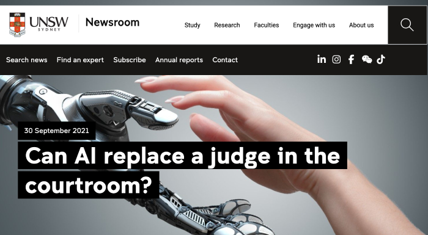

World Governments Summit
A great deal of the websites I have been looking at have are from governmental organizations, and are composed of a professional layout, a white background, and chunks of text (See below).
These layouts effectively convey information for this kind of serious topic. While I can draw inspiration from the color choices, layout, and in this case, the content, I'd like to have more interactivity on my website.
UNSW Sydney
One of the more decorated websites I looked at was UNSW Sydney's article on AI replacing judges. I liked the banner image on the article (see below)because it's visually engaging.
However, the article takes a simialar route to all the rest with its content (see below). The background is white, simple images are used, and there is no engagement.
I couldn't find any particularly interactive or engaging websites on this topic. I think it's important to have more developed user interfaces on our websites in order to encourage users to engage with the material in a meaningful and memorable way.
I'm going to have more user interactivity in my own project, but these websites are a reminder to make the material accessible and easy to read / digest.